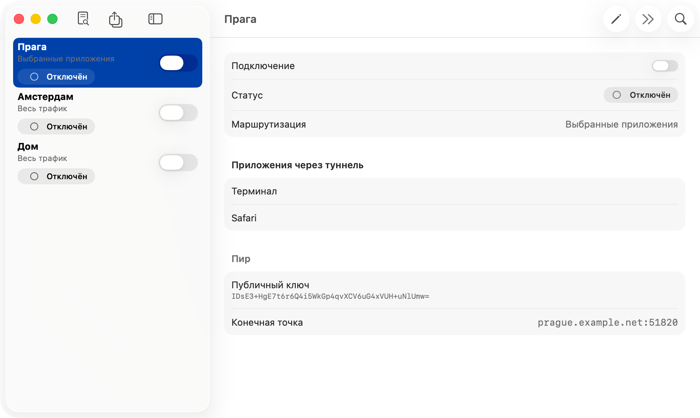
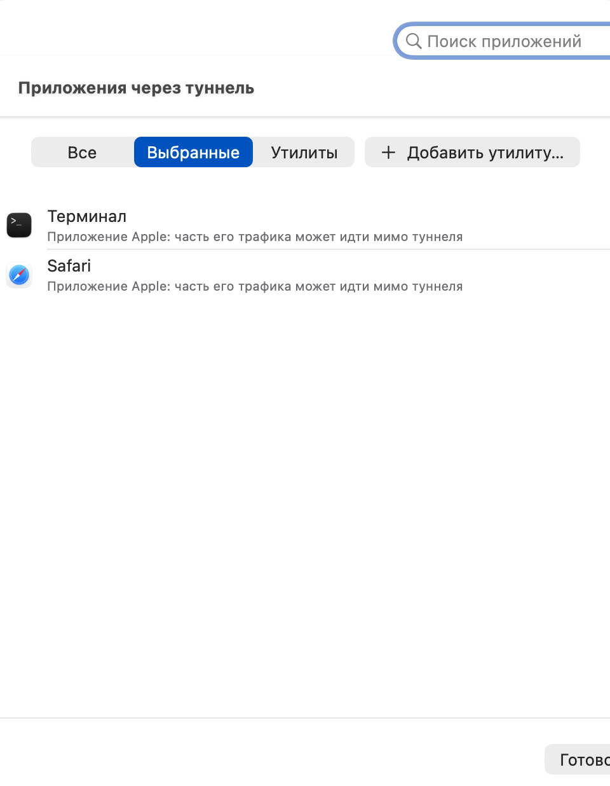

Приложения, а не подсети
Выбирайте приложения и утилиты командной строки. Их помощники и запущенные ими процессы идут следом: команды в выбранном Терминале тоже пойдут через туннель.
Бесплатно и с открытым кодом · macOS 26 и новее
Splitway — клиент WireGuard® для Mac. Добавьте свою конфигурацию, выберите приложения, которые пойдут через туннель, а всё остальное останется на обычном подключении.
Подписано Developer ID и нотаризовано Apple · Apple silicon и Intel · Все версии

Официальный клиент WireGuard направляет в туннель целые подсети. Splitway позволяет выбрать приложения, а остальной Mac оставляет на обычном подключении.
Выбирайте приложения и утилиты командной строки. Их помощники и запущенные ими процессы идут следом: команды в выбранном Терминале тоже пойдут через туннель.
DNS-запросы выбранных приложений тоже идут через туннель: они не утекают, а геолокация совпадает с VPN.
Если туннель недоступен, выбранные приложения ждут его, а не уходят напрямую. Для каждого туннеля это можно выключить.
Импортируйте .conf или .zip, вставьте текст из буфера или создайте туннель с новыми ключами. Без учётных записей и аналитики, ключи хранятся в связке ключей.
Переключайте туннели из строки меню, запускайте Splitway при входе или подключайтесь через «Команды» и Siri.
Весь код приложения на GitHub под лицензией GPL-3.0: его можно прочитать, собрать самостоятельно или помочь улучшить.
Splitway пользуется только публичными API macOS. Маршрутизация происходит на вашем Mac, а сведения о соединениях нигде не сохраняются и никуда не отправляются.
Splitway ставит системное сетевое расширение с прозрачным прокси. macOS сообщает ему, какое приложение открыло каждое TCP- или UDP-соединение.
Соединения выбранных приложений проходят через WireGuard внутри расширения. Всё остальное возвращается системе и идёт напрямую.
Туннель может пропускать и весь трафик, как официальный клиент, с возможностью оставить локальные сети в стороне.

Нужен сервер WireGuard: свой, на роутере или у VPN-провайдера, который выдаёт конфигурации WireGuard.
Возьмите последний Splitway.dmg.
Откройте образ и перетащите Splitway в «Программы»: сетевое расширение запускается только оттуда.
При первом запуске включите Splitway в «Системные настройки › Основные › Объекты входа и расширения › Сетевые расширения». Приложение подскажет путь.
Добавьте конфигурацию, разрешите конфигурацию VPN, когда macOS спросит, выберите приложения и включите туннель.
Нет. Это клиент, который подключается к серверу WireGuard — вашему или вашего провайдера. У Splitway нет своих серверов, учётных записей и подписок.
Нет. В приложении нет аналитики, рекламы и отслеживания, и оно никогда не обращается к разработчику. Подробности — в политике конфиденциальности.
Любое приложение или утилиту командной строки, в том числе Safari и приложения на WebKit или Electron. Процессы, которые запускает выбранное приложение, идут через туннель вместе с ним. Часть системных служб, которые работают за приложения Apple, может идти напрямую — приложение предупреждает об этом рядом с ними.
App Store принимает VPN-приложения только от компаний, а Splitway — независимый проект с открытым кодом. Вместо этого каждый выпуск подписан Developer ID и нотаризован Apple, поэтому macOS открывает его без предупреждений.
Нет. iOS не сообщает туннелю, какое приложение отправило пакет, а приложения для iPhone попадают к людям только через App Store.
Скачайте новую версию и замените Splitway в «Программах». Сетевое расширение обновится само при следующем запуске приложения.
Выберите «Удалить Splitway…» в настройках. Это сотрёт туннели с ключами, конфигурации VPN, данные приложения и сетевое расширение. Если просто перенести приложение в Корзину, всё это останется.
Бесплатно, с открытым кодом и без сбора данных.